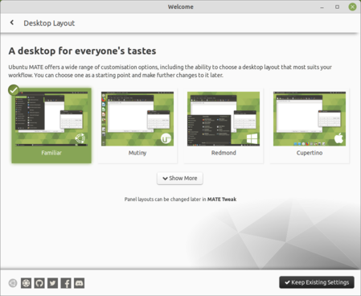

|  |
Personalized computing The default Ubuntu MATE user interface is intuitive and easy to use. But we understand people have different tastes and preferences, which is why we created MATE Tweak; a tool to change the user interface to mimic other operating systems. Coming from Windows? Try Redmond. Prefer the way macOS is layed out? Try Cupertino. For Ubuntu Unity fans take a look at Mutiny. Or for a hybrid user interface, try Pantheon or Comptemporary. Experienced users can customise the user interface and save their creations. Included software MATE Tweak |